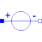

V_constantConstant independent voltage sources |

|
Information
This information is part of the Modelica Standard Library maintained by the Modelica Association.
The V_constant source is a source is a simple constant voltage source for an ideal constant voltage which is provided by a parameter.
Parameters (1)
| V |
Value: 1 Type: Voltage (V) Description: Value of constant voltage |
|---|
Connectors (2)
| p |
Type: PositivePin Description: Positive electrical pin |
|
|---|---|---|
| n |
Type: NegativePin Description: Negative electrical pin |
Used in Examples (6)
|
Modelica.Electrical.Spice3.Examples MOS Nand gate circuit |
|
|
Modelica.Electrical.Spice3.Examples |
|
|
Spice3BenchmarkDifferentialPair Modelica.Electrical.Spice3.Examples Simple differential pair |
|
|
Spice3BenchmarkMosfetCharacterization Modelica.Electrical.Spice3.Examples Mos output characteristics |
|
|
Modelica.Electrical.Spice3.Examples Simple RTL inverter |
|
|
Spice3BenchmarkFourBitBinaryAdder Modelica.Electrical.Spice3.Examples ADDER - 4 BIT ALL-NAND-GATE BINARY ADDER |